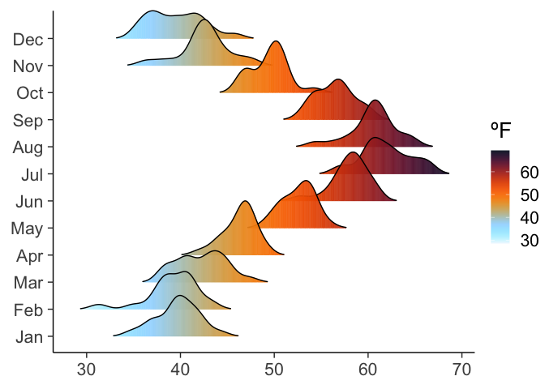

poisonfrogs is an extensive collection of 31 colour palettes inspired in Neotropical poison frogs. With more than 200 brighly colored species, Neotropical poison frogs paint the rain forest in vivid hues that shout a clear message: “I’m toxic!”. Spice up your plots with poisonfrogs and give your dataviz a toxic twist! But wait, we also included few color palettes inspired on other pretty frog species, because… why not?
Installation
You can install poisonfrogs from CRAN:
install.packages("poisonfrogs")or from the development version in GitHub with:
remotes::install_github("laurenoconnelllab/poisonfrogs")load the package:

Allobates femoralis
 Inspired after the brilliant-thighed poison frog, Allobates femoralis, from the Nouragues rainforest in French Guiana.
Inspired after the brilliant-thighed poison frog, Allobates femoralis, from the Nouragues rainforest in French Guiana.
Andinobates fulguritus
 Inspired after the Yellow-bellied poison frog, Andinobates fulguritus, from the Pacífic rainforest in Colombia.
Inspired after the Yellow-bellied poison frog, Andinobates fulguritus, from the Pacífic rainforest in Colombia.
Andinobates minutus
 Inspired after the Blue-bellied poison frog, Andinobates minutus, from the Pacífic rainforest in Colombia.
Inspired after the Blue-bellied poison frog, Andinobates minutus, from the Pacífic rainforest in Colombia.
Ameerega macero
 Inspired after the Blue-bellied poison frog, Andinobates minutus, from the Pacífic rainforest in Colombia.
Inspired after the Blue-bellied poison frog, Andinobates minutus, from the Pacífic rainforest in Colombia.
Ameerega shihuemoy
 Inspired after the Amarakaeri poison frog, Ameerega shihuemoy, from the Peruvian rainforest in the Manú district.
Inspired after the Amarakaeri poison frog, Ameerega shihuemoy, from the Peruvian rainforest in the Manú district.
Ameerega trivittata
 Inspired after the three-striped poison frog, Ameerega trivittata, from the Amazon rainforest of the Tanimboca reserve, Colombia.
Inspired after the three-striped poison frog, Ameerega trivittata, from the Amazon rainforest of the Tanimboca reserve, Colombia.
Dendrobates auratus
 Inspired after the three-striped poison frog, Dendrobates auratus, from the Pacífic rainforest in Colombia.
Inspired after the three-striped poison frog, Dendrobates auratus, from the Pacífic rainforest in Colombia.
Dendrobates tinctorius “alanis”
 Inspired after the Dyeing poison frog, Dendrobates tinctorius “alanis”, from the Nouragues rainforest in French Guiana.
Inspired after the Dyeing poison frog, Dendrobates tinctorius “alanis”, from the Nouragues rainforest in French Guiana.
Dendrobates tinctorius “azureus”
 Inspired after the Blue poison frog, Dendrobates tinctorius “azureus”, from the rainforest in Suthern Surinam.
Inspired after the Blue poison frog, Dendrobates tinctorius “azureus”, from the rainforest in Suthern Surinam.
Epipedobates anthonyi
 Inspired after the Anthony’s poison frog, Epipedobates anthonyi, from the rainforest in Ecuador and Perú.
Inspired after the Anthony’s poison frog, Epipedobates anthonyi, from the rainforest in Ecuador and Perú.
Epipedobates darwinwallacei
 Inspired after the Darwin-Wallace poison frog, Epipedobates darwinwallacei, from the rainforest in Ecuador.
Inspired after the Darwin-Wallace poison frog, Epipedobates darwinwallacei, from the rainforest in Ecuador.
Epipedobates tricolor
 Inspired after the phantasmal poison frog, Epipedobates tricolor, from the rainforest in Ecuador.
Inspired after the phantasmal poison frog, Epipedobates tricolor, from the rainforest in Ecuador.
Oophaga anchicayensis
 Inspired after the Anchicayá poison frog, Oophaga anchicayensis, from the rainforest in western Colombia.
Inspired after the Anchicayá poison frog, Oophaga anchicayensis, from the rainforest in western Colombia.
Oophaga histrionica
 Inspired after the harlequin poison frog, Oophaga histrionica, from the rainforest in western Colombia.
Inspired after the harlequin poison frog, Oophaga histrionica, from the rainforest in western Colombia.
Oophaga lehmanni
 Inspired after the Lehmann’s poison frog, Oophaga lehmanni, from the rainforest in western Colombia.
Inspired after the Lehmann’s poison frog, Oophaga lehmanni, from the rainforest in western Colombia.
Oophaga pumilio “bluejeans”
 Inspired after the strawberry poison frog, Oophaga pumilio “bluejeans”, from the rainforest in Central America.
Inspired after the strawberry poison frog, Oophaga pumilio “bluejeans”, from the rainforest in Central America.
Oophaga pumilio “colón”
 Inspired after the strawberry poison frog, Oophaga pumilio “colón”, from the Isla Colón in Bocas del Toro, Panamá.
Inspired after the strawberry poison frog, Oophaga pumilio “colón”, from the Isla Colón in Bocas del Toro, Panamá.
Oophaga pumilio “escudo”
 Inspired after the strawberry poison frog, Oophaga pumilio “escudo”, from the Isla Escudo de Veraguas in Bocas del Toro, Panamá.
Inspired after the strawberry poison frog, Oophaga pumilio “escudo”, from the Isla Escudo de Veraguas in Bocas del Toro, Panamá.
Oophaga pumilio “loma”
 Inspired after the strawberry poison frog, Oophaga pumilio “loma”, from the Isla Loma Partida in Bocas del Toro, Panamá.
Inspired after the strawberry poison frog, Oophaga pumilio “loma”, from the Isla Loma Partida in Bocas del Toro, Panamá.
Oophaga pumilio “sancristobal”
 Inspired after the strawberry poison frog, Oophaga pumilio “sancristobal”, from the Isla San Cristóbal in Bocas del Toro, Panamá.
Inspired after the strawberry poison frog, Oophaga pumilio “sancristobal”, from the Isla San Cristóbal in Bocas del Toro, Panamá.
Oophaga pumilio “uyama”
 Inspired after the strawberry poison frog, Oophaga pumilio “uyama”, from the Río Uyama in Bocas del Toro, Panamá.
Inspired after the strawberry poison frog, Oophaga pumilio “uyama”, from the Río Uyama in Bocas del Toro, Panamá.
Oophaga sylvatica “colón”
 Inspired after the little devil poison frog, Oophaga sylvatica “colón”, from the Cristobal Colón population in Ecuador.
Inspired after the little devil poison frog, Oophaga sylvatica “colón”, from the Cristobal Colón population in Ecuador.
Oophaga sylvatica “koi”
 Inspired after the little devil poison frog, Oophaga sylvatica “koi”, from the “koi” population in Nariño, Colombia.
Inspired after the little devil poison frog, Oophaga sylvatica “koi”, from the “koi” population in Nariño, Colombia.
Oophaga sylvatica “lita”
 Inspired after the little devil poison frog, Oophaga sylvatica “lita”, from the Lita population in Ecuador.
Inspired after the little devil poison frog, Oophaga sylvatica “lita”, from the Lita population in Ecuador.
Oophaga sylvatica “otokiki”
 Inspired after the little devil poison frog, Oophaga sylvatica “otokiki”, from the Otokiki population in Ecuador.
Inspired after the little devil poison frog, Oophaga sylvatica “otokiki”, from the Otokiki population in Ecuador.
Oophaga sylvatica “sanantonio”
 Inspired after the little devil poison frog, Oophaga sylvatica “sanantonio”, from the San Antonio population in Ecuador.
Inspired after the little devil poison frog, Oophaga sylvatica “sanantonio”, from the San Antonio population in Ecuador.
Oophaga sylvatica “sp1”
 Inspired after the little devil poison frog, Oophaga sylvatica “sp1”, from the sp1 population in Ecuador.
Inspired after the little devil poison frog, Oophaga sylvatica “sp1”, from the sp1 population in Ecuador.
Phyllobates terribilis
 Inspired after the golden poison frog, Phyllobates terribilis, from the rainforest in Cauca, Colombia.
Inspired after the golden poison frog, Phyllobates terribilis, from the rainforest in Cauca, Colombia.
Ranitomeya amazonica
 Inspired after the Amazonian poison frog, Ranitomeya amazonica, from the Amazon rainforest of the Tanimboca reserve, Colombia.
Inspired after the Amazonian poison frog, Ranitomeya amazonica, from the Amazon rainforest of the Tanimboca reserve, Colombia.
Ranitomeya imitator “striped”
 Inspired after the mimic poison frog, Ranitomeya imitator “striped”, from the rainforest in Perú.
Inspired after the mimic poison frog, Ranitomeya imitator “striped”, from the rainforest in Perú.
Ranitomeya imitator “banded”
 Inspired after the mimic poison frog, Ranitomeya imitator “banded”, from the rainforest in Perú.
Inspired after the mimic poison frog, Ranitomeya imitator “banded”, from the rainforest in Perú.
Ranitomeya variabilis
 Inspired after the Zimmerman’s poison frog, Ranitomeya variabilis, from the rainforest in Perú.
Inspired after the Zimmerman’s poison frog, Ranitomeya variabilis, from the rainforest in Perú.
Boana picturata
 Inspired after the Imbabura tree frog, Boana picturata, from the Pacific lowlands in Colombia and Ecuador.
Inspired after the Imbabura tree frog, Boana picturata, from the Pacific lowlands in Colombia and Ecuador.
Dendropsophus sarayacuensis
 Inspired after the Shreve’s Sarayacu tree frog, Dendropsophus sarayacuensis, from the Amazon rainforest of the Tanimboca reserve, Colombia.
Inspired after the Shreve’s Sarayacu tree frog, Dendropsophus sarayacuensis, from the Amazon rainforest of the Tanimboca reserve, Colombia.
Hypsiboas cinerascens
 Inspired after the Demerara Falls tree frog, Hypsiboas cinerascens, from the Amazon rainforest of the Tanimboca reserve, Colombia.
Inspired after the Demerara Falls tree frog, Hypsiboas cinerascens, from the Amazon rainforest of the Tanimboca reserve, Colombia.
Hypsiboas hobbsi
 Inspired after the Hobbs’ tree frog, Hypsiboas hobbsi, from the Amazon rainforest of the Tanimboca reserve, Colombia.
Inspired after the Hobbs’ tree frog, Hypsiboas hobbsi, from the Amazon rainforest of the Tanimboca reserve, Colombia.
Hyalinobatrachium fleischmanni
 Inspired after the Fleischmann’s glass frog, Hyalinobatrachium fleischmanni, from the rainforest in Ecuador.
Inspired after the Fleischmann’s glass frog, Hyalinobatrachium fleischmanni, from the rainforest in Ecuador.
Lithodythes lineatus
 Inspired after the Gold-striped frog, Lithodythes lineatus, from the Amazon rainforest of the Tanimboca reserve, Colombia.
Inspired after the Gold-striped frog, Lithodythes lineatus, from the Amazon rainforest of the Tanimboca reserve, Colombia.
Mantela laevigata
 Inspired after the climbing mantella, Mantela laevigata, from subtropical forest in Madagascar.
Inspired after the climbing mantella, Mantela laevigata, from subtropical forest in Madagascar.
Phyllomedusa tomopterna
 Inspired after the tiger-striped tree frog, Phyllomedusa tomopterna, from the Amazon rainforest of the Tanimboca reserve, Colombia.
Inspired after the tiger-striped tree frog, Phyllomedusa tomopterna, from the Amazon rainforest of the Tanimboca reserve, Colombia.
Phyllomedusa vaillantii
 Inspired after the white-lined leaf frog, Phyllomedusa vaillantii, from the Amazon rainforest of the Tanimboca reserve, Colombia.
Inspired after the white-lined leaf frog, Phyllomedusa vaillantii, from the Amazon rainforest of the Tanimboca reserve, Colombia.
Rhinella marina
 Inspired after the cane toad, Rhinella marina, from the Nouragues rainforest in French Guiana.
Inspired after the cane toad, Rhinella marina, from the Nouragues rainforest in French Guiana.
Usage
To call the names of all the xyz colour palettes in poisonfrogs:
poison_palettes_names()
#> [1] "Afemoralis" "Afulguritus" "Amacero" "Aminutus"
#> [5] "Ashihuemoy" "Atrivittata" "Bpicturata" "Dauratus"
#> [9] "Dsarayacuensis" "Dtalanis" "Dtazureus" "Eanthonyi"
#> [13] "Edarwinwallacei" "Etricolor" "Hcinerascens" "Hfleischmanni"
#> [17] "Hhobbsi" "Llineatus" "Mlaevigata" "Oanchicayensis"
#> [21] "Ohistrionica" "Olehmanni" "Opbluejeans" "Opcolon"
#> [25] "Opescudo" "Oploma" "Opsancristobal" "Opuyama"
#> [29] "Oscolon" "Oskoi" "Oslita" "Osotokiki"
#> [33] "Ossanantonio" "Ossp1" "Pterribilis" "Ptomopterna"
#> [37] "Pvaillantii" "Ramazonica" "Ribanded" "Ristriped"
#> [41] "Rmarina" "Rvariabilis"Plot poison frog palettes and print the hex codes of the colours in every palette:
# plot palette with hex codes
poison_palette("Hfleischmanni")
# get hex codes for a vector
cols <- poison_palette("Dtalanis", return = "vector")
cols
#> [1] "#090B0A" "#263F48" "#499AC1" "#EEA715" "#FED126"Examples
Continuos scale
require(tidyverse)
require(gapminder)
require(gridExtra)
require(ggridges)
#continuous scale
df_nottem <- tibble(
year = floor(time(nottem)),
month = factor(month.abb[cycle(nottem)], levels = month.abb),
temp = as.numeric(nottem)
)
p1 <- ggplot(df_nottem, aes(x = temp, y = month, fill = after_stat(x))) +
geom_density_ridges_gradient(scale = 2, rel_min_height = 0.01) +
scale_fill_poison(
name = "Oskoi",
type = "continuous",
alpha = 0.95,
direction = -1
) +
labs(
fill = "ºF",
y = NULL,
x = NULL) +
theme_classic(base_size = 20, base_line_size = 0.5) +
theme(legend.position = "right", legend.justification = "left",
legend.margin = margin(0,0,0,0),
legend.box.margin = margin(-5,-5,-5,-5)) +
coord_cartesian(clip = "off")
p1
Discrete scale 1
#discrete scale 1
p2 <- ggplot(gapminder, aes(x = continent, y = lifeExp, fill = continent)) +
geom_boxplot(alpha = 0.95, outliers = F) +
geom_jitter(
shape = 21,
position = position_jitter(0.1),
alpha = 0.2,
size = 0.8,
bg = "grey"
) +
stat_summary(
fun = mean,
geom = "point",
size = 1.5,
color = "black",
alpha = 0.6
) +
theme_classic(base_size = 20, base_line_size = 0.5) +
scale_fill_poison(
name = "Opcolon",
type = "discrete",
alpha = 0.95,
direction = -1
) +
theme(legend.position = "none") +
xlab(NULL) +
ylab("Life Expentancy")
p2
Discrete scale 2
#discrete scale 2
p3 <- ggplot(gapminder, aes(x = lifeExp, y = log(gdpPercap), colour = continent)) +
geom_point(alpha = 0.2) +
scale_colour_poison(name = "Ashihuemoy", type = "discrete") +
stat_smooth() +
facet_wrap(.~continent, scales = "free") +
theme_minimal(20, base_line_size = 0.2) +
theme(legend.position = "none",
strip.background = element_blank(), strip.placement = "outside")
p3